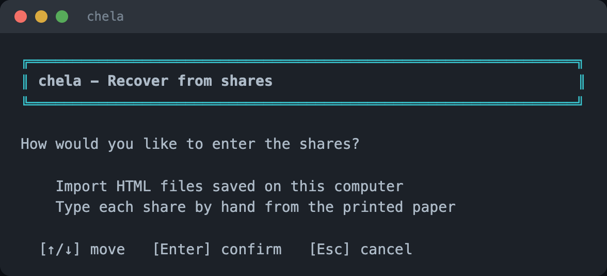
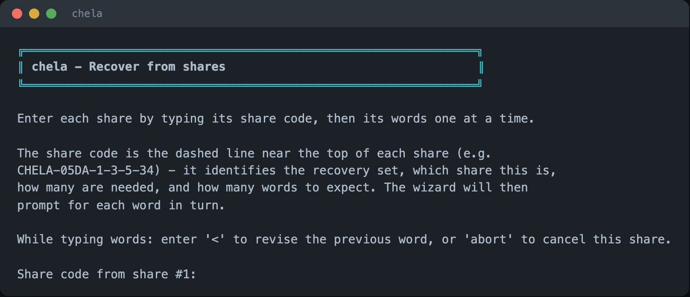
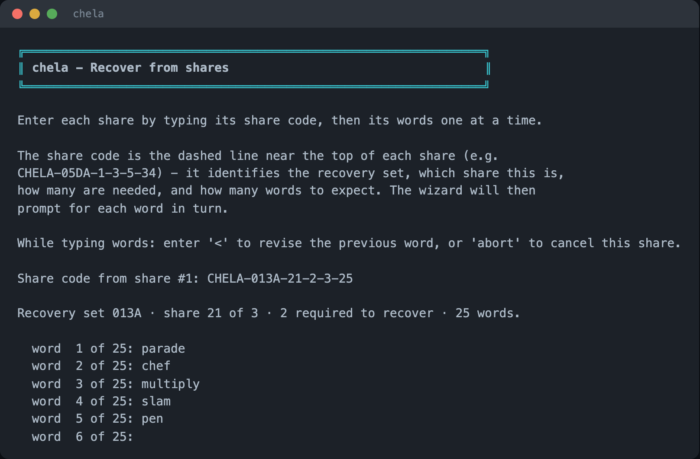
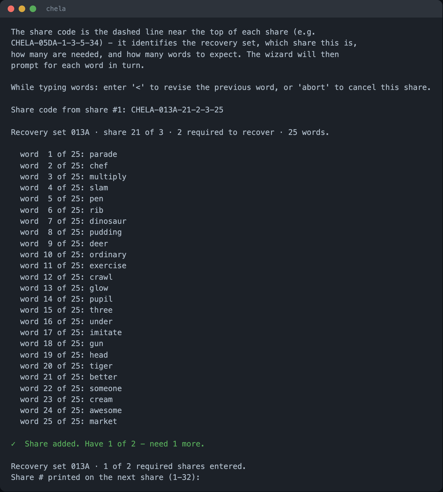
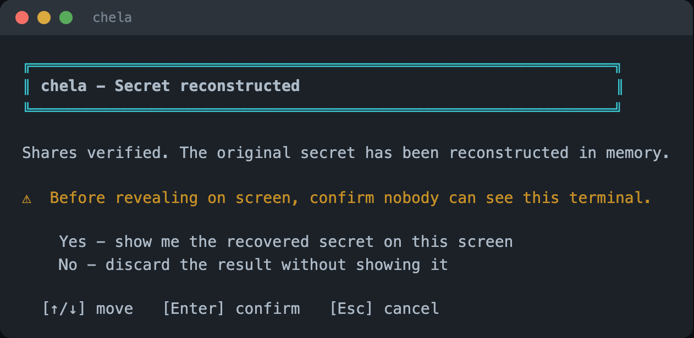
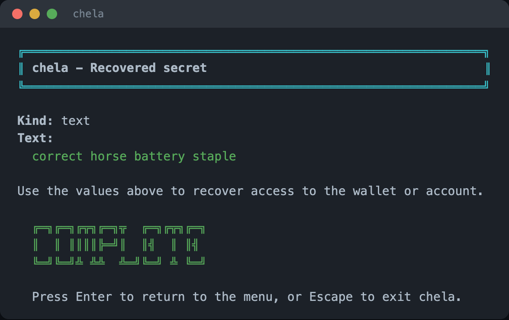

Recovery in the terminal wizard
Run chela and choose Recover, and the wizard collects
your shares one at a time, then rebuilds the secret. It is the gentlest way to
recover from printed paper: it prompts for one word at a time and checks each as you
go. To create shares in the first place, see
splitting in the terminal wizard.
1. Choose how to enter shares
The wizard offers two ways in: import saved HTML backups from this computer, or type each share by hand from the printed paper. This walkthrough types them by hand - the common case when your shares are on paper in a safe.

2. Enter a share's code
Type the CHELA-... code printed near the top of the first share. From
it, the wizard knows the recovery set, which share this is, how many are needed, and
how many words to expect - so it can prompt you precisely.

3. Type the words, one at a time
The wizard then asks for each word in turn - "word 1 of 25," "word 2 of 25," and so
on. Every word is checked against the BIP-39 wordlist as you enter it, and you can
type < to revise the previous word. A mistyped word is caught here,
not folded silently into a wrong secret.

4. Add shares until you reach the threshold
After each share the wizard reports progress - "Have 1 of 2 - need 1 more" - and asks for the next share's number, then its words. It confirms every share belongs to the same set; a share from a different split is refused. Keep going until you have entered the threshold.

5. Confirm, then reveal
Once you reach the threshold, the wizard reconstructs the secret in memory and pauses before showing anything, asking you to confirm no one can see the screen. Choose to reveal only when that is true.

Revealing prints the secret to the terminal. The wizard shows it on an alternate screen so it does not linger in scrollback, but a screen recorder, a shoulder-surfer, or swap on a compromised machine can still capture it. Reveal on a machine and in a moment you trust. The threat model covers what is and is not in chela's reach.

Next steps
The same recovery is available on the website and the command line. To understand how a few word lists rebuild an exact secret, read the share format.